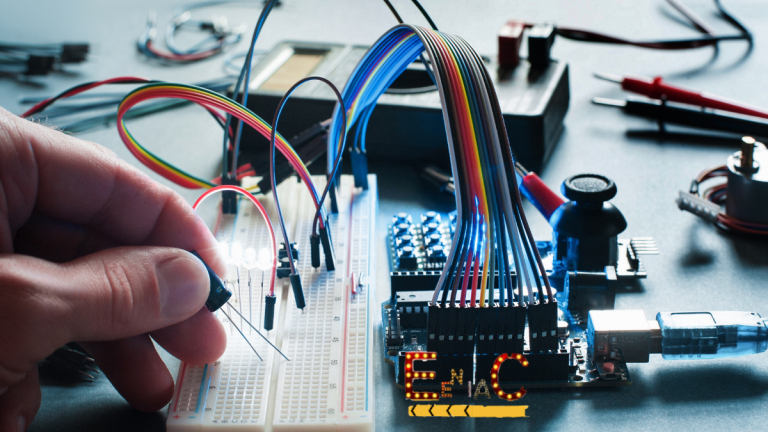

Qué es la Electrónica
- La electrónica es una rama de la física aplicada que comprende la física, la ingeniería, la tecnología y las aplicaciones que tratan con la emisión, el flujo y el control de los electrones u otras partículas cargadas eléctricamente— en el vacío y la materia.
- Sus aplicaciones incluyen desde la industria, medicina, agricultura y exploración espacial, hasta la educación y la vida cotidiana, revolucionando continuamente múltiples sectores.
- La identificación del electrón en 1897, junto con la invención del tubo de vacío, que podía amplificar y rectificar pequeñas señales eléctricas, inauguraron el campo de la electrónica y la edad del electrón.

¿Qué es la electrónica?
Se llama electrónica a una disciplina técnica y científica, considerada como una rama de la física y como una especialización de la ingeniería, que se dedica al estudio y la producción de sistemas físicos basados en la conducción y el control de un flujo de electrones o de partículas cargadas eléctricamente normamlmente con cargas pequeñas o mediasnas de energia hasta el orden de los 1000V, pero normalmente se trabaja con menos de 20v o incluso con menos de 1v.
La electrónica trata con circuitos eléctricos que involucran componentes eléctricos activos como tubos de vacío, transistores, diodos, circuitos integrados, optoelectrónica y sensores, asociados con componentes eléctricos pasivos y tecnologías de interconexión. Generalmente los dispositivos electrónicos contienen circuitos que consisten principalmente, o exclusivamente, en semiconductores activos complementados con elementos pasivos; tal circuito se describe como un circuito electrónico.

Con todo esto en claro quisieramos proponer o realizar en conjuto con esta rama realizar una alarma o un mecanismo de automatización para la sirena del colegio mediante la prgramación y la electronica para no interumpir a ningun maestro y no olvidarse de tocar la sirena cuando sean los cambios de hora , lo realizariamos con un microcontrolador o con una placa de desarrollo como Arduino para controlar reles para la activacion de la sirena, teniendo tambien el beneficio de que se lo pueda progrmar con el horario "B" para que cumpla con todos los estandares y se degaria tambien la opcion de activar la sierena manualmente, se le podira agregar algun sensor para cuando detecte un sismo suene automaticamente.